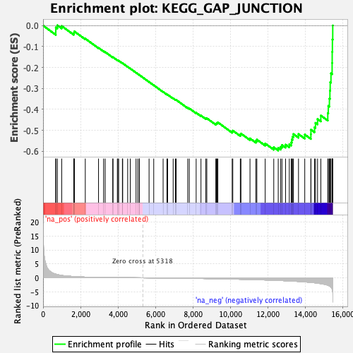
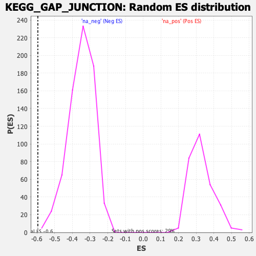

| | | Dataset | DE_genes |
| Phenotype | NoPhenotypeAvailable |
| Upregulated in class | na_neg |
| GeneSet | KEGG_GAP_JUNCTION |
| Enrichment Score (ES) | -0.5958146 |
| Normalized Enrichment Score (NES) | -1.7004635 |
| Nominal p-value | 0.0014144272 |
| FDR q-value | 0.042691633 |
| FWER p-Value | 0.564 |
Table: GSEA Results Summary

Fig 1: Enrichment plot: KEGG_GAP_JUNCTION
Profile of the Running ES Score & Positions of GeneSet Members on the Rank Ordered List
| PROBE | GENE SYMBOL | GENE_TITLE | RANK IN GENE LIST | RANK METRIC SCORE | RUNNING ES | CORE ENRICHMENT | | 1 | ADCY7 | | | 679 | 1.316 | -0.0266 | No |
| 2 | PDGFRA | | | 680 | 1.313 | -0.0090 | No |
| 3 | GNAS | | | 763 | 1.169 | 0.0012 | No |
| 4 | GNAQ | | | 995 | 0.865 | -0.0022 | No |
| 5 | GNAI3 | | | 1639 | 0.456 | -0.0379 | No |
| 6 | LPAR1 | | | 1655 | 0.451 | -0.0329 | No |
| 7 | PRKACB | | | 1671 | 0.445 | -0.0279 | No |
| 8 | TUBB | | | 2254 | 0.253 | -0.0623 | No |
| 9 | PRKACA | | | 2961 | 0.143 | -0.1063 | No |
| 10 | EGFR | | | 3233 | 0.120 | -0.1223 | No |
| 11 | HTR2C | | | 3316 | 0.113 | -0.1261 | No |
| 12 | PRKCG | | | 3722 | 0.086 | -0.1513 | No |
| 13 | PLCB2 | | | 3733 | 0.086 | -0.1508 | No |
| 14 | MAP3K2 | | | 3966 | 0.072 | -0.1649 | No |
| 15 | PRKG2 | | | 3996 | 0.070 | -0.1658 | No |
| 16 | HTR2A | | | 4036 | 0.068 | -0.1675 | No |
| 17 | EGF | | | 4236 | 0.056 | -0.1796 | No |
| 18 | ADCY2 | | | 4251 | 0.055 | -0.1798 | No |
| 19 | TUBAL3 | | | 4517 | 0.040 | -0.1965 | No |
| 20 | SRC | | | 4656 | 0.034 | -0.2050 | No |
| 21 | GNAI2 | | | 4963 | 0.018 | -0.2246 | No |
| 22 | PDGFA | | | 5059 | 0.012 | -0.2306 | No |
| 23 | ADCY1 | | | 5137 | 0.009 | -0.2355 | No |
| 24 | ADCY8 | | | 5146 | 0.009 | -0.2359 | No |
| 25 | GRB2 | | | 5659 | -0.018 | -0.2689 | No |
| 26 | TUBB4A | | | 5908 | -0.033 | -0.2846 | No |
| 27 | PDGFD | | | 6409 | -0.066 | -0.3162 | No |
| 28 | CDK1 | | | 6613 | -0.082 | -0.3283 | No |
| 29 | PRKCB | | | 6650 | -0.085 | -0.3295 | No |
| 30 | KRAS | | | 6945 | -0.106 | -0.3472 | No |
| 31 | NRAS | | | 7069 | -0.116 | -0.3536 | No |
| 32 | ADRB1 | | | 7104 | -0.119 | -0.3542 | No |
| 33 | DRD1 | | | 7724 | -0.173 | -0.3922 | No |
| 34 | HTR2B | | | 7805 | -0.179 | -0.3950 | No |
| 35 | TUBA8 | | | 8173 | -0.215 | -0.4159 | No |
| 36 | SOS2 | | | 8430 | -0.244 | -0.4293 | No |
| 37 | GJA1 | | | 8690 | -0.273 | -0.4425 | No |
| 38 | TUBB2A | | | 8743 | -0.279 | -0.4421 | No |
| 39 | TUBB1 | | | 9222 | -0.338 | -0.4687 | No |
| 40 | MAP2K1 | | | 9255 | -0.342 | -0.4662 | No |
| 41 | HRAS | | | 9295 | -0.347 | -0.4641 | No |
| 42 | TUBB2B | | | 9331 | -0.350 | -0.4617 | No |
| 43 | PRKG1 | | | 10096 | -0.461 | -0.5052 | No |
| 44 | ITPR2 | | | 10129 | -0.466 | -0.5011 | No |
| 45 | GNAI1 | | | 10530 | -0.525 | -0.5200 | No |
| 46 | MAP2K2 | | | 10564 | -0.531 | -0.5151 | No |
| 47 | TUBB3 | | | 11047 | -0.605 | -0.5383 | No |
| 48 | PRKCA | | | 11361 | -0.669 | -0.5497 | No |
| 49 | PLCB4 | | | 11415 | -0.682 | -0.5441 | No |
| 50 | GNA11 | | | 11858 | -0.774 | -0.5625 | No |
| 51 | PDGFB | | | 12316 | -0.881 | -0.5804 | No |
| 52 | ADCY9 | | | 12554 | -0.942 | -0.5832 | Yes |
| 53 | TUBA1B | | | 12685 | -0.975 | -0.5787 | Yes |
| 54 | MAPK1 | | | 12754 | -0.998 | -0.5698 | Yes |
| 55 | MAPK3 | | | 12945 | -1.060 | -0.5680 | Yes |
| 56 | TJP1 | | | 13145 | -1.119 | -0.5660 | Yes |
| 57 | PLCB1 | | | 13249 | -1.155 | -0.5573 | Yes |
| 58 | PDGFC | | | 13277 | -1.166 | -0.5435 | Yes |
| 59 | MAPK7 | | | 13317 | -1.180 | -0.5303 | Yes |
| 60 | MAP2K5 | | | 13367 | -1.202 | -0.5174 | Yes |
| 61 | PLCB3 | | | 13637 | -1.305 | -0.5175 | Yes |
| 62 | GUCY1A2 | | | 13971 | -1.456 | -0.5197 | Yes |
| 63 | CSNK1D | | | 14298 | -1.659 | -0.5188 | Yes |
| 64 | ADCY5 | | | 14301 | -1.660 | -0.4967 | Yes |
| 65 | ADCY3 | | | 14492 | -1.782 | -0.4853 | Yes |
| 66 | SOS1 | | | 14542 | -1.821 | -0.4642 | Yes |
| 67 | PRKX | | | 14653 | -1.922 | -0.4457 | Yes |
| 68 | TUBB6 | | | 14829 | -2.090 | -0.4292 | Yes |
| 69 | TUBA1A | | | 15200 | -2.664 | -0.4177 | Yes |
| 70 | ADCY4 | | | 15227 | -2.724 | -0.3830 | Yes |
| 71 | ADCY6 | | | 15287 | -2.883 | -0.3484 | Yes |
| 72 | ITPR1 | | | 15314 | -3.000 | -0.3101 | Yes |
| 73 | TUBA1C | | | 15329 | -3.069 | -0.2701 | Yes |
| 74 | RAF1 | | | 15370 | -3.364 | -0.2278 | Yes |
| 75 | TUBA4A | | | 15432 | -3.985 | -0.1786 | Yes |
| 76 | ITPR3 | | | 15436 | -4.017 | -0.1252 | Yes |
| 77 | PDGFRB | | | 15447 | -4.465 | -0.0663 | Yes |
| 78 | TUBB4B | | | 15465 | -5.085 | 0.0004 | Yes |
Table: GSEA details [plain text format]

Fig 2: KEGG_GAP_JUNCTION: Random ES distribution
Gene set null distribution of ES for KEGG_GAP_JUNCTION